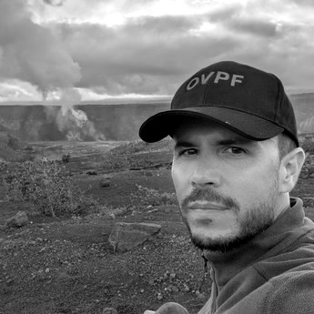

 |
Sismologue, chargé de recherche CNRS Directeur adjoint de l'Observatoire Volcanologique du Piton de la Fournaise, Institut de Physique du Globe de Paris La Réunion, France E-mail: duputel [at] ipgp . fr ORCID: 0000-0002-8809-451X |
PRÉSENTATION Mes recherches visent à comprendre le fonctionnement des volcans et des failles, et leur lien avec la sismicité. Ces connaissances contribuent à améliorer la surveillance et l'anticipation de ces phénomènes. Je m'intéresse en particulier au transport magmatique, à l'instabilité des flancs volcaniques, aux signaux sismo-volcaniques, notamment ceux qui précèdent les éruptions, et à la physique de la source des séismes. Pour cela, je combine observations sismologiques et géodésiques avec des approches quantitatives : modélisation des formes d'onde, inférence bayésienne et détection par filtrage adapté.
ACTUALITÉS